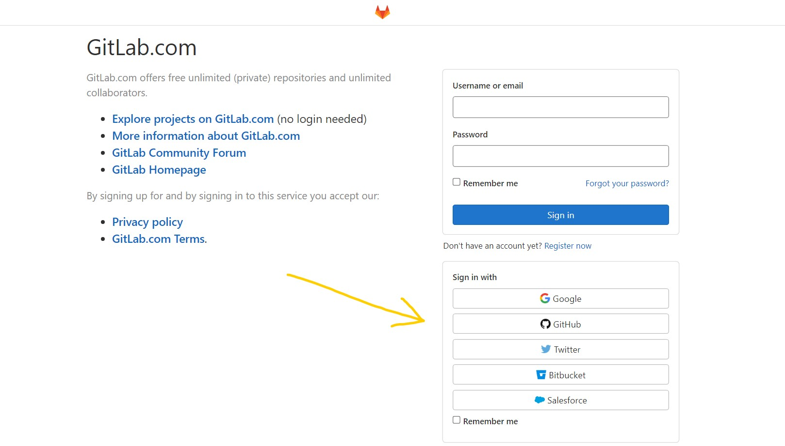

OAuth 2.0 Authentication Vulnerabilities
OAuth là gì?
Có bao giờ bạn thắc mắc tại sao các website cho phép Sign in with Google, Sign in with GitHub?

Đó chính là OAuth/OAuth 2.0 - một protocol cho phép website sử dụng chức năng xác thực của một service khác (như Google, Facebook, GitHub) mà không cần user chia sẻ password.
Cách OAuth 2.0 hoạt động
OAuth 2.0 là trung gian giao tiếp giữa 3 bên:
- Resource Owner (User): Chủ sở hữu data
- Client Application: Website muốn truy cập data
- OAuth Provider: Service cung cấp OAuth (Google, Facebook, etc.)
Quy trình cơ bản (4 bước)
- Client Application yêu cầu quyền truy cập một phần data của user
- User đăng nhập vào OAuth Provider và đồng ý cấp quyền
- Client Application nhận access token từ OAuth Provider
- Client Application dùng token để gọi API và lấy data của user
OAuth Grant Types
- Authorization Code: Secure nhất, dành cho server-side apps
- Implicit: Đơn giản hơn nhưng kém an toàn, dành cho client-side apps
- Client Credentials: Dành cho machine-to-machine
- Resource Owner Password: Ít được khuyến khích dùng
Các lỗ hổng phổ biến
Phía Client Application
- ❌ Không validate
stateparameter → CSRF - ❌ Tin tưởng hoàn toàn data từ OAuth Provider
- ❌ Implement sai grant type flow
Phía OAuth Provider
- ❌ Không validate
redirect_uriđúng cách - ❌ Không kiểm tra
client_id - ❌ Lỗ hổng trong scope validation
- ❌ Token leakage qua Referer header
Phía User
- ❌ Phishing - đăng nhập vào fake OAuth Provider
- ❌ Malicious apps yêu cầu quá nhiều permissions
Labs - Danh sách các bài thực hành
1. Implicit Flow Vulnerabilities
Các lab về lỗ hổng trong Implicit Flow
2. Redirect URI Vulnerabilities
Các lab về lỗ hổng Redirect URI
- Lab: OAuth account hijacking via redirect_uri
- Lab: Stealing OAuth access tokens via an open redirect
- Lab: Stealing OAuth access tokens via a proxy page
Cách phòng chống
OAuth Provider (Authorization Server)
✅ Validate redirect_uri nghiêm ngặt
- Exact match hoặc whitelist cụ thể
- Không cho phép wildcards trong domain
- Kiểm tra cả protocol (https://)
✅ Implement state parameter
- Generate random, unique value mỗi request
- Validate khi nhận callback
✅ Token security
- Short-lived access tokens
- Refresh tokens với rotation
- Bind tokens to client
Client Application
✅ Luôn dùng state parameter để chống CSRF
✅ Validate tokens
- Verify signature nếu dùng JWT
- Check expiration time
- Validate issuer và audience
✅ Redirect URI best practices
- Register exact URIs với provider
- Không dùng wildcard redirects
- Validate redirect_uri ở backend
✅ Scope principle
- Chỉ request scopes cần thiết
- Hiển thị rõ permissions cho user
User
✅ Check URL trước khi login (phishing) ✅ Review app permissions định kỳ ✅ Revoke access của apps không dùng
Impact của OAuth vulnerabilities
- 🔴 Account takeover: Chiếm tài khoản victim
- 🔴 Data leakage: Đọc private data của user
- 🟠 Unauthorized actions: Thực hiện actions thay mặt user
- 🟡 Privacy violation: Thu thập data không đồng ý